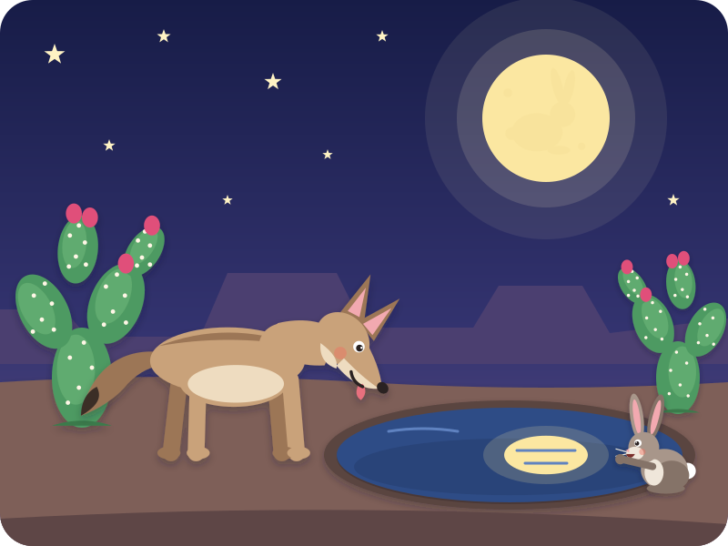
A trickster tale from Mexico
Rabbit and Coyote and the Moon Cheese
"Story, story — are your ears open?" Kai: "Open!"
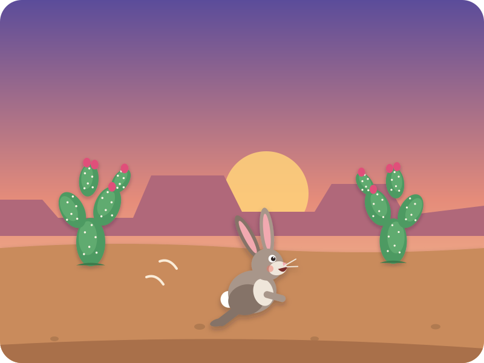
Far away in Mexico, in a dry, dusty valley full of prickly cactus, lived a little rabbit: Señor Conejo.
He was small, but oh, he was quick — and very clever.
Hop, hop, hop! Kai hops his fingers
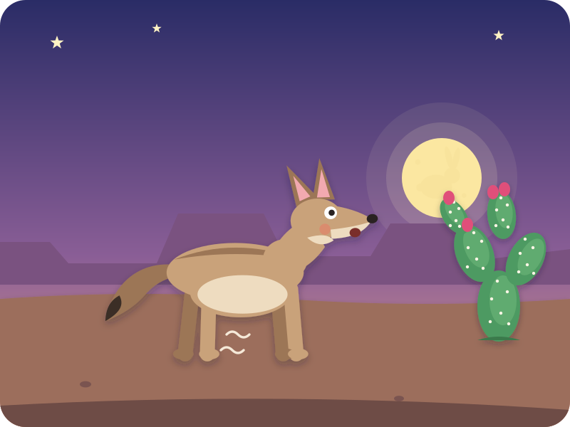
In the same valley lived Señor Coyote. He had pointy ears, a bushy tail… and a tummy that was always hungry.
Grrrumble, grrrumble! Kai rumbles his tummy
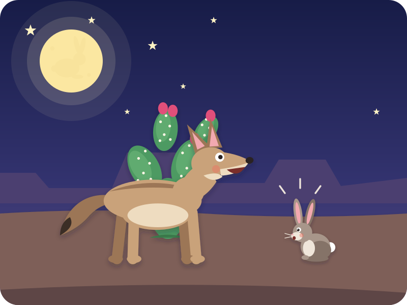
One night, under a big round moon, Rabbit was nibbling by the cactus — when out jumped Coyote!
"Aha, Rabbit! I'm going to gobble you up!"
Rabbit's ears went up. Then he had an idea.
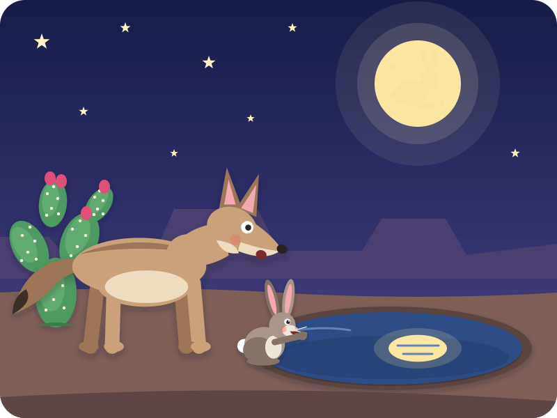
"Oh, Señor Coyote," said Rabbit, "why eat a little bony rabbit like me?"
"Look, down there in the pond — a great big, round, yellow cheese!"
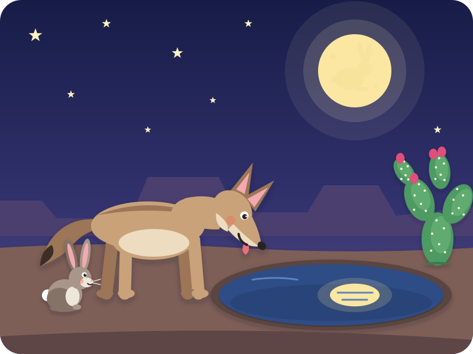
Coyote looked. There in the water lay something round and shiny. "Mmm, cheese!" He licked his lips. "But how do I get it?"
"Easy," said Rabbit. "Just drink up all the water, and the cheese is yours."
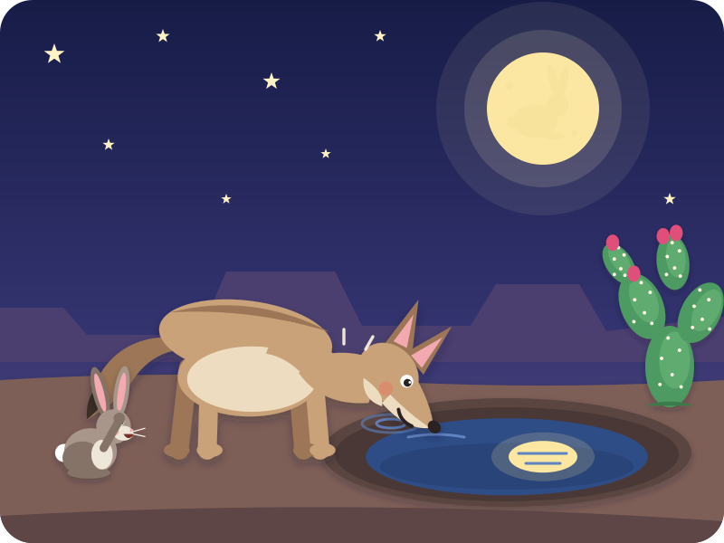
So Coyote put his nose in the pond and drank.
Slurp, slurp, slurp! Kai: "Slurp, slurp, slurp!" — and count them: one, two, three!
"Keep going!" called Rabbit.
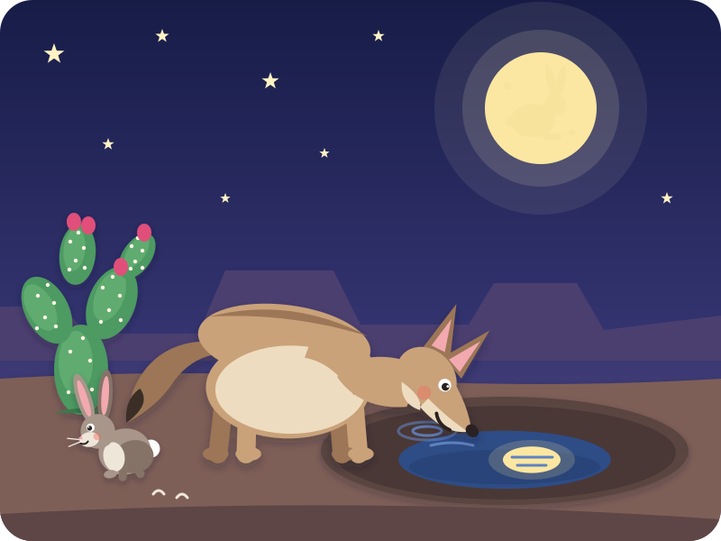
Slurp, slurp, slurp! count: four, five, six!
Coyote's tummy got rounder… and rounder. But the cheese was still at the bottom of the pond.
And while Coyote slurped, Rabbit tiptoed away… tip, tip, tip.
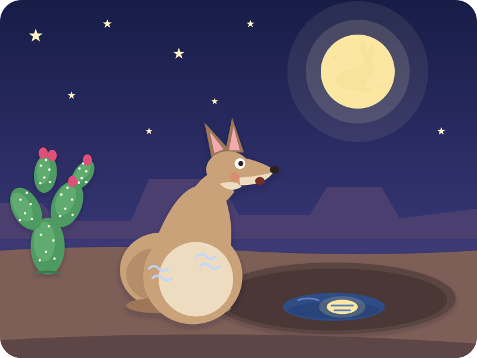
Slurp… slurp… sl— oof! Coyote sat down. His tummy was as round as a drum.
Slosh, slosh! Kai pats his tummy
"I can't drink one more drop," said Coyote.
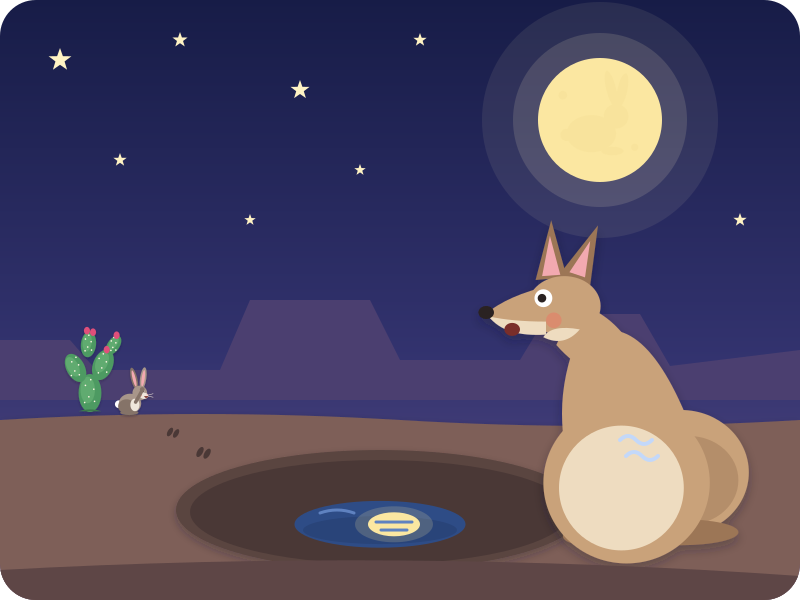
"Rabbit? Where's my cheese?" But Rabbit was far away over the hill.
And the cheese was still shining in the puddle — because it was never a cheese at all. It was the moon, shining in the water like a mirror!
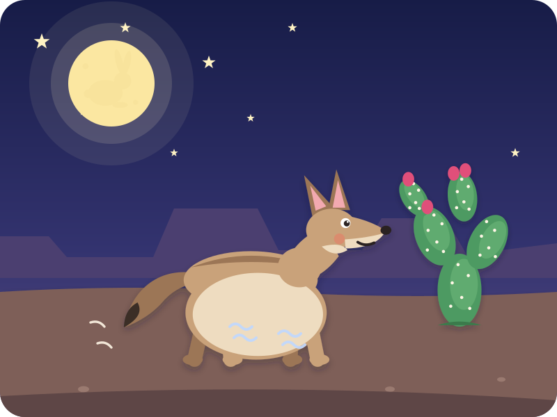
So Señor Coyote waddled home, slowly, slowly, with his big full tummy going…
Slosh, slosh, slosh! Kai sways side to side
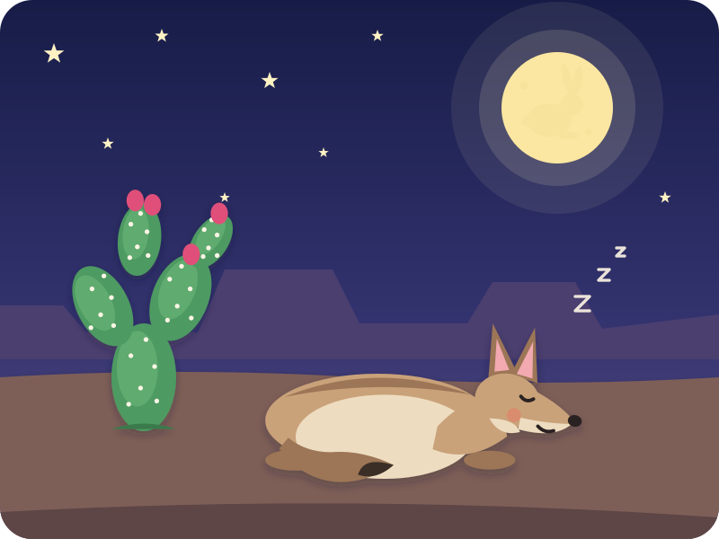
He was much too full to be hungry. He curled up, gave one little hic! and fell fast asleep.
Nobody got eaten that night — and in the morning, Coyote felt just fine.
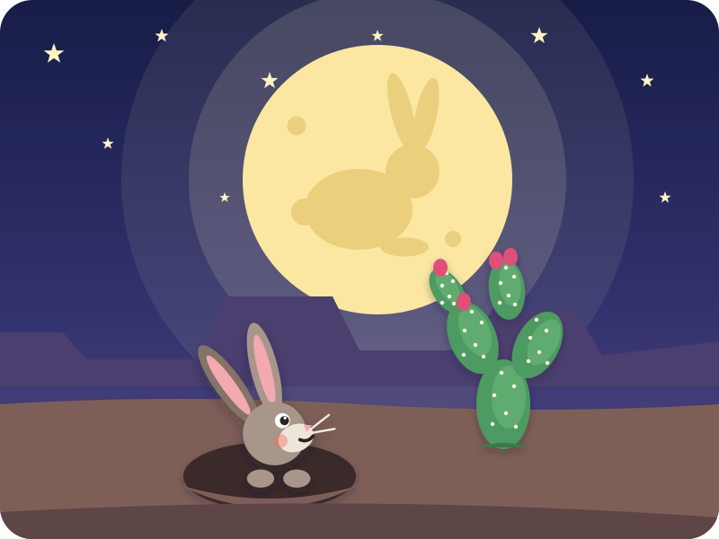
And Rabbit? Safe in his burrow, he peeked up at the big round moon. And there on the moon — can you see? — was the shape of a rabbit!
In Mexico, people say there is a rabbit in the moon. Kai finds the rabbit's ears
"Goodnight, Rabbit!"
The End
"Snip, snap, snout — this tale's told out."
Swipe back to read it again
Driving? Tell it without the page · six beats
The picture book is for home, bedtime, or a passenger. In the car, tell it from memory — bold is Kai's part.
- In a dry Mexican valley full of cactus lived quick little Señor Conejo, the rabbit — hop, hop, hop! — and big Señor Coyote, whose tummy was always hungry — grrrumble!
- One moonlit night Coyote jumps out: "I'm going to gobble you up!" Rabbit thinks fast.
- "Why eat me? Look in the pond — a big round cheese! Drink up the water and it's yours."
- Coyote drinks: slurp, slurp, slurp! — count the slurps! His tummy gets rounder and rounder, and Rabbit tiptoes away.
- Coyote can't drink one more drop — slosh, slosh! The "cheese" is still in the water. It was the moon, shining like a mirror!
- Coyote waddles home and sleeps, too full to be hungry. Rabbit, safe at home, sees a rabbit in the moon — "Goodnight, Rabbit!"
After the story · car-friendly wondering
"Was it really a cheese in the pond? What was it?"
"Where else can you see things shining back at you, like a mirror? A puddle? A spoon?"
"Next time the moon is big and round, shall we look for the rabbit?"
Where this story comes from
Rabbit-and-Coyote trickster stories are told all over Mexico, and the moon-cheese trick is one of the favourites. Folklorists file it under the international tale type ATU 34, "the wolf dives into the water for reflected cheese." In Europe it is usually a wolf and a fox, and in Mexico it is Coyote and Rabbit. One Mexican source is a Zapotec tale from Oaxaca, published in Zapotec and Spanish as Cuento del conejo y el coyote, adapted by Gloria and Víctor de la Cruz and illustrated by the painter Francisco Toledo. In it, Rabbit points at the moon in the water and offers Coyote the "cheese." Library catalogues list a 2008 trilingual edition (Zapotec, Spanish and English) from Fondo de Cultura Económica in Mexico City, with Francisco Toledo's pictures. Those catalogues credit the text to Natalia Toledo and Carlos Monsiváis, though, so the de la Cruz adaptation may be an earlier edition, and we haven't confirmed who wrote which version. In English, a well-known version is Tony Johnston's picture book The Tale of Rabbit and Coyote, illustrated by Tomie dePaola (Putnam, 1994) and set in Oaxaca. There Rabbit tricks Coyote several times, Coyote tries to drink a lake to reach the moon-cheese, and Rabbit escapes to the moon, which is why coyotes howl at it. Some village versions are harsher: in one from Nuevo León, collected by Homero Adame, Coyote drowns. This retelling is our own, for a 4-year-old. We kept only the moon-cheese trick, had Coyote drink until he was too full instead of coming to harm, added the slurp-counting and sloshing for Kai, and ended with the rabbit in the moon, a very old Mexican way of seeing the moon's shadows that goes back at least to Aztec times. Calling them "Señor Conejo" and "Señor Coyote" follows many English retellings. The pond, the mesas and the pink-fruited nopal are our picture-book choices.